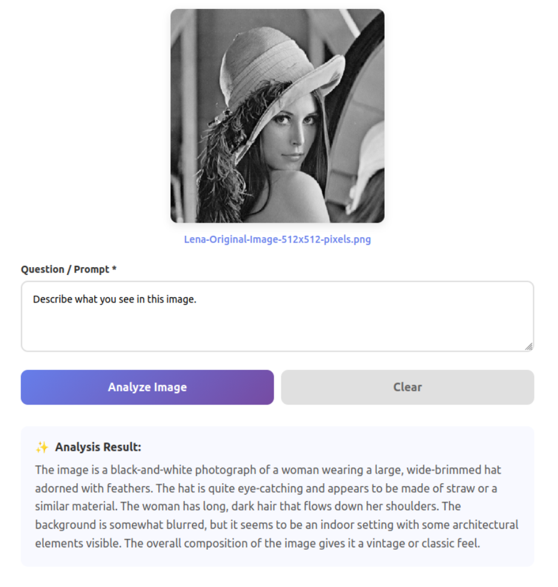

Current Role:
AI/ML/Deployment/Software Engineer at Sentics GmbH
Project Overview
Deployed and integrated Qwen2-VL (Vision Language Model) on company infrastructure to automate document processing and load documentation workflows. The project encompasses full-stack deployment including model hosting on company servers, web-based dashboard development for internal access, and seamless integration with existing production pipelines. The system enables automated extraction of structured data from visual documents, feeding directly into company databases through coordinated cross-team integration.
Key Responsibilities
- VLM deployment: Configured and deployed Qwen2-VL model on company server infrastructure
- Dashboard development: Built simple web-based interface for model interaction and monitoring
- Network integration: Configured local network access for internal company usage
- Pipeline integration: Connected VLM to existing load documentation workflow
- Prompt engineering: Developed and fixed prompts in codebase for consistent JSON output
- Database integration: Implemented output parsing and feeding to company database
- Cross-team coordination: Collaborated with dashboard development team for end-to-end integration
- Production deployment: Ensured reliable operation in production environment
Technology Stack
Qwen2-VL
Vision Language Models
Python
Web Dashboard
Server Deployment
Network Configuration
JSON Processing
Database Integration
Prompt Engineering
Production Pipelines
Technical Highlights
- Model deployment: Successfully deployed large-scale VLM on company server infrastructure
- Local network access: Configured localhost-based access for secure internal usage
- Automated workflow: Integrated VLM into existing load documentation pipeline
- Structured output: Implemented fixed prompts for consistent JSON extraction
- Dashboard interface: Built user-friendly web interface for model interaction
- Cross-team integration: Coordinated with dashboard team for seamless data flow
- Production-ready: Deployed system handling real document processing workloads
System Architecture
The VLM deployment follows a multi-tier architecture: (1) Model inference layer running Qwen2-VL on company servers, (2) Web dashboard layer providing localhost access for internal users, (3) Integration layer connecting to load documentation pipeline with fixed prompts, (4) Data processing layer parsing JSON outputs, and (5) Database layer feeding structured data to company systems. The dashboard team consumes this data for visualization and reporting.
Impact & Use Cases
This VLM deployment automates previously manual document processing tasks, significantly reducing time required for load documentation. The system extracts structured information from visual documents (images, PDFs, scanned forms) and feeds it directly into production databases. Internal teams can access the model through a simple dashboard interface, while the automated pipeline integration enables hands-free processing of recurring documentation workflows. The cross-team collaboration ensures the extracted data is properly visualized and accessible to stakeholders.
Skills Demonstrated
- Large language model deployment and configuration
- Vision-language model integration and prompt engineering
- Full-stack development: backend model hosting to frontend dashboard
- Server infrastructure and network configuration
- Production pipeline integration and automation
- Cross-functional team coordination and collaboration
- Database integration and structured data processing
- Enterprise AI system deployment